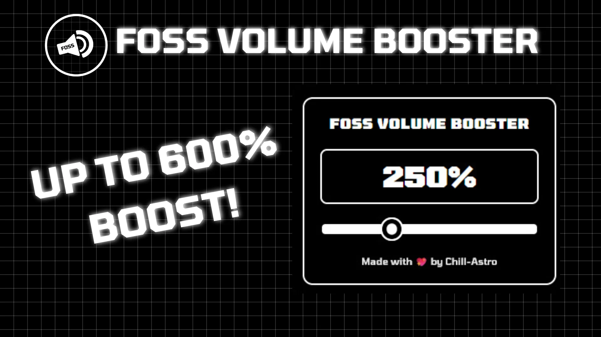

FOSS Volume Booster is an Open Source and Lightweight Volume Booster Extension made for Firefox and Chromium. Boost volume up to 600%!
Available on Microsoft Edge Add-ons and Firefox Add-ons!
Latest Version: Loading…
Key Features:
- Extremely Lightweight! ✓
- No Ads or Trackers! ✓
- Clean and Minimalist UI! ✓
- Boosts Volume up to 600%! ✓
Usage:
Note: This extension does not work on Chromium on mobile.
Step 1: Clone this repository
git clone https://github.com/Chill-Astro/FOSS-Volume-Booster.git
cd FOSS-Volume-BoosterChromium
- Enable Developer Mode in Extension Settings.
- Import the
/srcfolder and enjoy!
Firefox
- Convert
/srcto a.zipfile. - Go to
about:debugging> This Firefox. - Click Load Temporary Add-on and enjoy! (Until the app restarts.)